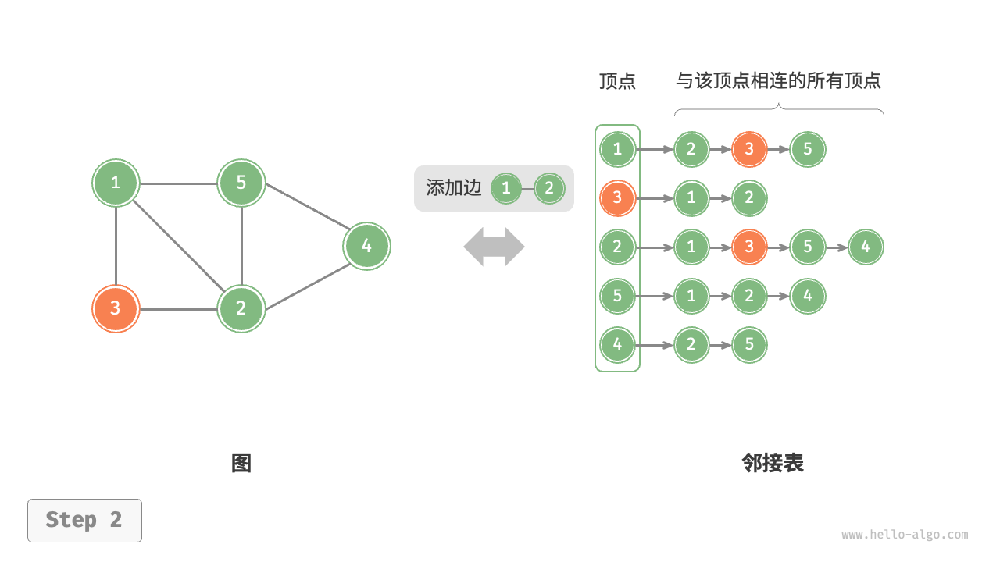
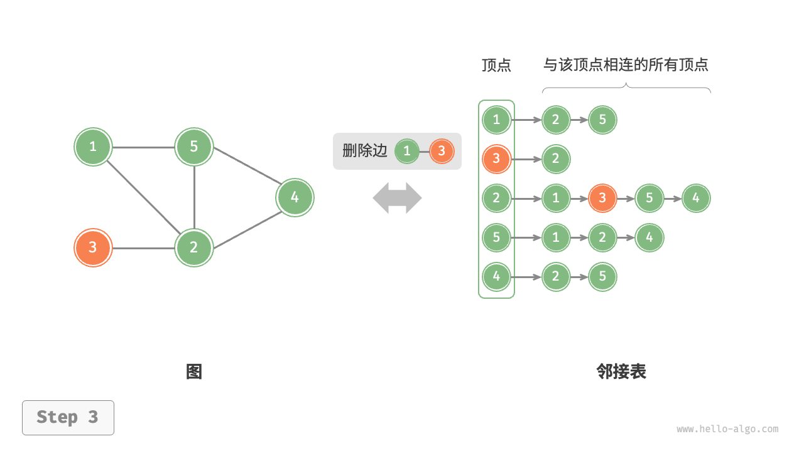
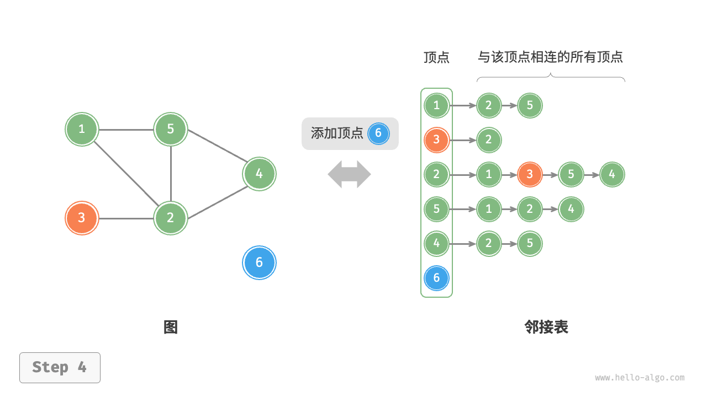
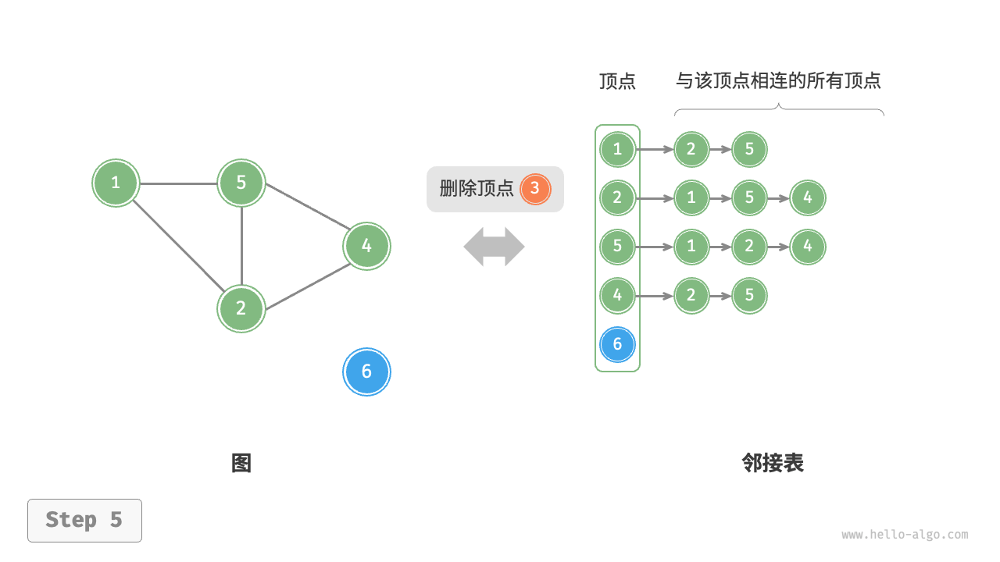

图基础操作
图的基础操作可分为对“边”的操作和对“顶点”的操作。在“邻接矩阵”和“邻接表”两种表示方法下，实现方式有所不同。
基于邻接矩阵的实现
给定一个顶点数量为 $n$ 的无向图，则各种操作的实现方式如下图所示。
- 添加或删除边：直接在邻接矩阵中修改指定的边即可，使用 $O(1)$ 时间。而由于是无向图，因此需要同时更新两个方向的边。
- 添加顶点：在邻接矩阵的尾部添加一行一列，并全部填 $0$ 即可，使用 $O(n)$ 时间。
- 删除顶点：在邻接矩阵中删除一行一列。当删除首行首列时达到最差情况，需要将 $(n-1)^2$ 个元素“向左上移动”，从而使用 $O(n^2)$ 时间。
初始化：传入 $n$ 个顶点，初始化长度为 $n$ 的顶点列表
vertices，使用 $O(n)$ 时间；初始化 $n \times n$ 大小的邻接矩阵adjMat，使用 $O(n^2)$ 时间。"初始化邻接矩阵"

"添加边"

"删除边"

"添加顶点"
"删除顶点"

以下是基于邻接矩阵表示图的实现代码：
"Python"
class GraphAdjMat: """基于邻接矩阵实现的无向图类""" def __init__(self, vertices: list[int], edges: list[list[int]]): """构造方法""" // 顶点列表，元素代表“顶点值”，索引代表“顶点索引” self.vertices: list[int] = [] // 邻接矩阵，行列索引对应“顶点索引” self.adj_mat: list[list[int]] = [] // 添加顶点 for val in vertices: self.add_vertex(val) // 添加边 // 请注意，edges 元素代表顶点索引，即对应 vertices 元素索引 for e in edges: self.add_edge(e[0], e[1]) def size(self) -> int: """获取顶点数量""" return len(self.vertices) def add_vertex(self, val: int): """添加顶点""" n = self.size() // 向顶点列表中添加新顶点的值 self.vertices.append(val) // 在邻接矩阵中添加一行 new_row = [0] * n self.adj_mat.append(new_row) // 在邻接矩阵中添加一列 for row in self.adj_mat: row.append(0) def remove_vertex(self, index: int): """删除顶点""" if index >= self.size(): raise IndexError() // 在顶点列表中移除索引 index 的顶点 self.vertices.pop(index) // 在邻接矩阵中删除索引 index 的行 self.adj_mat.pop(index) // 在邻接矩阵中删除索引 index 的列 for row in self.adj_mat: row.pop(index) def add_edge(self, i: int, j: int): """添加边""" // 参数 i, j 对应 vertices 元素索引 // 索引越界与相等处理 if i < 0 or j < 0 or i >= self.size() or j >= self.size() or i == j: raise IndexError() // 在无向图中，邻接矩阵关于主对角线对称，即满足 (i, j) == (j, i) self.adj_mat[i][j] = 1 self.adj_mat[j][i] = 1 def remove_edge(self, i: int, j: int): """删除边""" // 参数 i, j 对应 vertices 元素索引 // 索引越界与相等处理 if i < 0 or j < 0 or i >= self.size() or j >= self.size() or i == j: raise IndexError() self.adj_mat[i][j] = 0 self.adj_mat[j][i] = 0 def print(self): """打印邻接矩阵""" print("顶点列表 =", self.vertices) print("邻接矩阵 =") print_matrix(self.adj_mat)"C++"
/* 基于邻接矩阵实现的无向图类 */ class GraphAdjMat { vector<int> vertices; // 顶点列表，元素代表“顶点值”，索引代表“顶点索引” vector<vector<int>> adjMat; // 邻接矩阵，行列索引对应“顶点索引” public: /* 构造方法 */ GraphAdjMat(const vector<int> &vertices, const vector<vector<int>> &edges) { // 添加顶点 for (int val : vertices) { addVertex(val); } // 添加边 // 请注意，edges 元素代表顶点索引，即对应 vertices 元素索引 for (const vector<int> &edge : edges) { addEdge(edge[0], edge[1]); } } /* 获取顶点数量 */ int size() const { return vertices.size(); } /* 添加顶点 */ void addVertex(int val) { int n = size(); // 向顶点列表中添加新顶点的值 vertices.push_back(val); // 在邻接矩阵中添加一行 adjMat.emplace_back(vector<int>(n, 0)); // 在邻接矩阵中添加一列 for (vector<int> &row : adjMat) { row.push_back(0); } } /* 删除顶点 */ void removeVertex(int index) { if (index >= size()) { throw out_of_range("顶点不存在"); } // 在顶点列表中移除索引 index 的顶点 vertices.erase(vertices.begin() + index); // 在邻接矩阵中删除索引 index 的行 adjMat.erase(adjMat.begin() + index); // 在邻接矩阵中删除索引 index 的列 for (vector<int> &row : adjMat) { row.erase(row.begin() + index); } } /* 添加边 */ // 参数 i, j 对应 vertices 元素索引 void addEdge(int i, int j) { // 索引越界与相等处理 if (i < 0 || j < 0 || i >= size() || j >= size() || i == j) { throw out_of_range("顶点不存在"); } // 在无向图中，邻接矩阵关于主对角线对称，即满足 (i, j) == (j, i) adjMat[i][j] = 1; adjMat[j][i] = 1; } /* 删除边 */ // 参数 i, j 对应 vertices 元素索引 void removeEdge(int i, int j) { // 索引越界与相等处理 if (i < 0 || j < 0 || i >= size() || j >= size() || i == j) { throw out_of_range("顶点不存在"); } adjMat[i][j] = 0; adjMat[j][i] = 0; } /* 打印邻接矩阵 */ void print() { cout << "顶点列表 = "; printVector(vertices); cout << "邻接矩阵 =" << endl; printVectorMatrix(adjMat); } };"Java"
/* 基于邻接矩阵实现的无向图类 */ class GraphAdjMat { List<Integer> vertices; // 顶点列表，元素代表“顶点值”，索引代表“顶点索引” List<List<Integer>> adjMat; // 邻接矩阵，行列索引对应“顶点索引” /* 构造方法 */ public GraphAdjMat(int[] vertices, int[][] edges) { this.vertices = new ArrayList<>(); this.adjMat = new ArrayList<>(); // 添加顶点 for (int val : vertices) { addVertex(val); } // 添加边 // 请注意，edges 元素代表顶点索引，即对应 vertices 元素索引 for (int[] e : edges) { addEdge(e[0], e[1]); } } /* 获取顶点数量 */ public int size() { return vertices.size(); } /* 添加顶点 */ public void addVertex(int val) { int n = size(); // 向顶点列表中添加新顶点的值 vertices.add(val); // 在邻接矩阵中添加一行 List<Integer> newRow = new ArrayList<>(n); for (int j = 0; j < n; j++) { newRow.add(0); } adjMat.add(newRow); // 在邻接矩阵中添加一列 for (List<Integer> row : adjMat) { row.add(0); } } /* 删除顶点 */ public void removeVertex(int index) { if (index >= size()) throw new IndexOutOfBoundsException(); // 在顶点列表中移除索引 index 的顶点 vertices.remove(index); // 在邻接矩阵中删除索引 index 的行 adjMat.remove(index); // 在邻接矩阵中删除索引 index 的列 for (List<Integer> row : adjMat) { row.remove(index); } } /* 添加边 */ // 参数 i, j 对应 vertices 元素索引 public void addEdge(int i, int j) { // 索引越界与相等处理 if (i < 0 || j < 0 || i >= size() || j >= size() || i == j) throw new IndexOutOfBoundsException(); // 在无向图中，邻接矩阵关于主对角线对称，即满足 (i, j) == (j, i) adjMat.get(i).set(j, 1); adjMat.get(j).set(i, 1); } /* 删除边 */ // 参数 i, j 对应 vertices 元素索引 public void removeEdge(int i, int j) { // 索引越界与相等处理 if (i < 0 || j < 0 || i >= size() || j >= size() || i == j) throw new IndexOutOfBoundsException(); adjMat.get(i).set(j, 0); adjMat.get(j).set(i, 0); } /* 打印邻接矩阵 */ public void print() { System.out.print("顶点列表 = "); System.out.println(vertices); System.out.println("邻接矩阵 ="); PrintUtil.printMatrix(adjMat); } }
基于邻接表的实现
设无向图的顶点总数为 $n$、边总数为 $m$ ，则可根据下图所示的方法实现各种操作。
- 添加边：在顶点对应链表的末尾添加边即可，使用 $O(1)$ 时间。因为是无向图，所以需要同时添加两个方向的边。
- 删除边：在顶点对应链表中查找并删除指定边，使用 $O(m)$ 时间。在无向图中，需要同时删除两个方向的边。
- 添加顶点：在邻接表中添加一个链表，并将新增顶点作为链表头节点，使用 $O(1)$ 时间。
- 删除顶点：需遍历整个邻接表，删除包含指定顶点的所有边，使用 $O(n + m)$ 时间。
初始化：在邻接表中创建 $n$ 个顶点和 $2m$ 条边，使用 $O(n + m)$ 时间。
"初始化邻接表"

"添加边" 
"删除边" 
"添加顶点" 
"删除顶点" 
以下是邻接表的代码实现。对比上图，实际代码有以下不同。
- 为了方便添加与删除顶点，以及简化代码，我们使用列表（动态数组）来代替链表。
- 使用哈希表来存储邻接表，
key为顶点实例，value为该顶点的邻接顶点列表（链表）。
另外，我们在邻接表中使用 Vertex 类来表示顶点，这样做的原因是：如果与邻接矩阵一样，用列表索引来区分不同顶点，那么假设要删除索引为 $i$ 的顶点，则需遍历整个邻接表，将所有大于 $i$ 的索引全部减 $1$ ，效率很低。而如果每个顶点都是唯一的 Vertex 实例，删除某一顶点之后就无须改动其他顶点了。
"Python"
class GraphAdjList: """基于邻接表实现的无向图类""" def __init__(self, edges: list[list[Vertex]]): """构造方法""" // 邻接表，key：顶点，value：该顶点的所有邻接顶点 self.adj_list = dict[Vertex, list[Vertex]]() // 添加所有顶点和边 for edge in edges: self.add_vertex(edge[0]) self.add_vertex(edge[1]) self.add_edge(edge[0], edge[1]) def size(self) -> int: """获取顶点数量""" return len(self.adj_list) def add_edge(self, vet1: Vertex, vet2: Vertex): """添加边""" if vet1 not in self.adj_list or vet2 not in self.adj_list or vet1 == vet2: raise ValueError() // 添加边 vet1 - vet2 self.adj_list[vet1].append(vet2) self.adj_list[vet2].append(vet1) def remove_edge(self, vet1: Vertex, vet2: Vertex): """删除边""" if vet1 not in self.adj_list or vet2 not in self.adj_list or vet1 == vet2: raise ValueError() // 删除边 vet1 - vet2 self.adj_list[vet1].remove(vet2) self.adj_list[vet2].remove(vet1) def add_vertex(self, vet: Vertex): """添加顶点""" if vet in self.adj_list: return // 在邻接表中添加一个新链表 self.adj_list[vet] = [] def remove_vertex(self, vet: Vertex): """删除顶点""" if vet not in self.adj_list: raise ValueError() // 在邻接表中删除顶点 vet 对应的链表 self.adj_list.pop(vet) // 遍历其他顶点的链表，删除所有包含 vet 的边 for vertex in self.adj_list: if vet in self.adj_list[vertex]: self.adj_list[vertex].remove(vet) def print(self): """打印邻接表""" print("邻接表 =") for vertex in self.adj_list: tmp = [v.val for v in self.adj_list[vertex]] print(f"{vertex.val}: {tmp},")"C++"
/* 基于邻接表实现的无向图类 */ class GraphAdjList { public: // 邻接表，key：顶点，value：该顶点的所有邻接顶点 unordered_map<Vertex *, vector<Vertex *>> adjList; /* 在 vector 中删除指定节点 */ void remove(vector<Vertex *> &vec, Vertex *vet) { for (int i = 0; i < vec.size(); i++) { if (vec[i] == vet) { vec.erase(vec.begin() + i); break; } } } /* 构造方法 */ GraphAdjList(const vector<vector<Vertex *>> &edges) { // 添加所有顶点和边 for (const vector<Vertex *> &edge : edges) { addVertex(edge[0]); addVertex(edge[1]); addEdge(edge[0], edge[1]); } } /* 获取顶点数量 */ int size() { return adjList.size(); } /* 添加边 */ void addEdge(Vertex *vet1, Vertex *vet2) { if (!adjList.count(vet1) || !adjList.count(vet2) || vet1 == vet2) throw invalid_argument("不存在顶点"); // 添加边 vet1 - vet2 adjList[vet1].push_back(vet2); adjList[vet2].push_back(vet1); } /* 删除边 */ void removeEdge(Vertex *vet1, Vertex *vet2) { if (!adjList.count(vet1) || !adjList.count(vet2) || vet1 == vet2) throw invalid_argument("不存在顶点"); // 删除边 vet1 - vet2 remove(adjList[vet1], vet2); remove(adjList[vet2], vet1); } /* 添加顶点 */ void addVertex(Vertex *vet) { if (adjList.count(vet)) return; // 在邻接表中添加一个新链表 adjList[vet] = vector<Vertex *>(); } /* 删除顶点 */ void removeVertex(Vertex *vet) { if (!adjList.count(vet)) throw invalid_argument("不存在顶点"); // 在邻接表中删除顶点 vet 对应的链表 adjList.erase(vet); // 遍历其他顶点的链表，删除所有包含 vet 的边 for (auto &adj : adjList) { remove(adj.second, vet); } } /* 打印邻接表 */ void print() { cout << "邻接表 =" << endl; for (auto &adj : adjList) { const auto &key = adj.first; const auto &vec = adj.second; cout << key->val << ": "; printVector(vetsToVals(vec)); } } };"Java"
/* 基于邻接表实现的无向图类 */ class GraphAdjList { // 邻接表，key：顶点，value：该顶点的所有邻接顶点 Map<Vertex, List<Vertex>> adjList; /* 构造方法 */ public GraphAdjList(Vertex[][] edges) { this.adjList = new HashMap<>(); // 添加所有顶点和边 for (Vertex[] edge : edges) { addVertex(edge[0]); addVertex(edge[1]); addEdge(edge[0], edge[1]); } } /* 获取顶点数量 */ public int size() { return adjList.size(); } /* 添加边 */ public void addEdge(Vertex vet1, Vertex vet2) { if (!adjList.containsKey(vet1) || !adjList.containsKey(vet2) || vet1 == vet2) throw new IllegalArgumentException(); // 添加边 vet1 - vet2 adjList.get(vet1).add(vet2); adjList.get(vet2).add(vet1); } /* 删除边 */ public void removeEdge(Vertex vet1, Vertex vet2) { if (!adjList.containsKey(vet1) || !adjList.containsKey(vet2) || vet1 == vet2) throw new IllegalArgumentException(); // 删除边 vet1 - vet2 adjList.get(vet1).remove(vet2); adjList.get(vet2).remove(vet1); } /* 添加顶点 */ public void addVertex(Vertex vet) { if (adjList.containsKey(vet)) return; // 在邻接表中添加一个新链表 adjList.put(vet, new ArrayList<>()); } /* 删除顶点 */ public void removeVertex(Vertex vet) { if (!adjList.containsKey(vet)) throw new IllegalArgumentException(); // 在邻接表中删除顶点 vet 对应的链表 adjList.remove(vet); // 遍历其他顶点的链表，删除所有包含 vet 的边 for (List<Vertex> list : adjList.values()) { list.remove(vet); } } /* 打印邻接表 */ public void print() { System.out.println("邻接表 ="); for (Map.Entry<Vertex, List<Vertex>> pair : adjList.entrySet()) { List<Integer> tmp = new ArrayList<>(); for (Vertex vertex : pair.getValue()) tmp.add(vertex.val); System.out.println(pair.getKey().val + ": " + tmp + ","); } } }
效率对比
设图中共有 $n$ 个顶点和 $m$ 条边，下表对比了邻接矩阵和邻接表的时间效率和空间效率。
表
| 邻接矩阵 | 邻接表（链表） | 邻接表（哈希表） | |
|---|---|---|---|
| 判断是否邻接 | $O(1)$ | $O(m)$ | $O(1)$ |
| 添加边 | $O(1)$ | $O(1)$ | $O(1)$ |
| 删除边 | $O(1)$ | $O(m)$ | $O(1)$ |
| 添加顶点 | $O(n)$ | $O(1)$ | $O(1)$ |
| 删除顶点 | $O(n^2)$ | $O(n + m)$ | $O(n)$ |
| 内存空间占用 | $O(n^2)$ | $O(n + m)$ | $O(n + m)$ |
观察上表，似乎邻接表（哈希表）的时间效率与空间效率最优。但实际上，在邻接矩阵中操作边的效率更高，只需一次数组访问或赋值操作即可。综合来看，邻接矩阵体现了“以空间换时间”的原则，而邻接表体现了“以时间换空间”的原则。